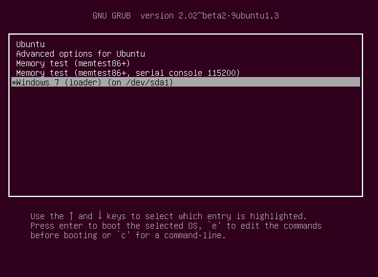
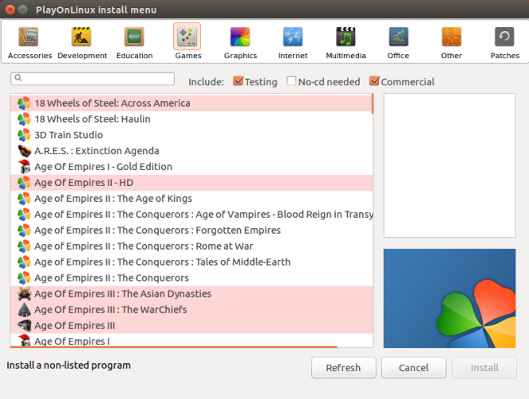
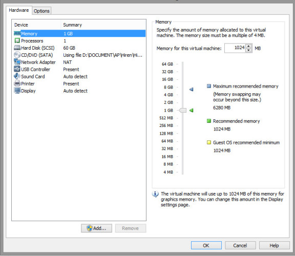

编译自：http://www.makeuseof.com/tag/reasons-dual-boot-linux/
作者： Moe Long
转载自： http://os.51cto.com/art/201610/518677.htm
译者： 核子可乐
本文地址：https://linux.cn/article-7919-1.html
计算机当中最重要的组件之一就是操作系统。事实上，强大的操作系统应当具备软件兼容性，并能够顺畅实现硬件与软件之间的交互。对于大多数用户而言，Linux 加 Windows 或者 Linux 加 Mac OS 往往是最理想的组合。
日常使用中，我们可以在同一台设备上使用双系统。Windows 与 Linux 可谓各有所长。Linux 拥有出色的可定制能力、安全性优势、具备专门的开源社区且大多数为免费版本。Windows 或者 Mac OS 也有着自己的拥护者，它们的优势在于具备更多原生应用及更低操作复杂性。
但为什么不二者皆有呢？下面我们将共同了解选择双引导系统的五个理由，与不应该选择双系统的两条反面理由。


Windows 的原生游戏更出色，而 Linux 则具备更理想的编程环境。虽然部分游戏已经开始跨系统平台推出，但毫无疑问， Windows 仍然是游戏玩家的最佳系统选项。
如果想玩点老游戏（例如 16 位游戏），那么现代 Windows 架构往往无法完成任务。而 Linux 能够通过 32 位与 64 位系统很好地支持 16 位程序。这归功于 Wine（Wine Is Not an Emulator），大部分 Windows 应用都能够顺利运行。打算新老游戏通吃？双系统帮你解决问题。
在以原生方式运行操作系统时（不同于虚拟机），操作系统能够完全访问主机设备。因此，双系统意味着系统本身能够更为全面地访问各硬件组件，且其速度普遍高于虚拟机方案。
大家可能已经发现，某些常用程序在特定操作系统下无法很好地运作，例如 Netflix。虽然 Linux 系统也提供几种 Netflix 解决办法，但用户需要对其进行修改。考虑到大多数朋友会以单一设备为中心，例如笔记本电脑，因此安装双系统能够更好地保证您顺畅访问全部应用及服务。
在编程方面，Linux 通常具备诸多优势。系统本身免费提供，且能够支持 Java、PHP、Ruby、Perl、Python 以及 C/C++ 等语言，外加各类编码应用以及 bash。
打算为 Windows 或者 Mac 平台开发应用？使用 Linux 仍然没有问题，但一般来说原生开发往往更好。举例来说，Windows 提供极为强大的 Visual Studio，适用于 Windows 应用开发。
虽然命令行会给新手用户带来难以使用的第一印象，但 Linux 实际上具备非常出色的易用性。毕竟 Linux 是一款操作系统，与 Windows 及 Mac OS 并没有本质上的区别。
同样的，双系统引导也易于实现。目前网上提供大量此类教程，大家可以将 Linux 作为第二系统进行安装，并在启动时进行选择。再有，文件共享也不是问题，因为 Linux 能够访问大部分 Windows 文件。
说了这么多优势，下面来看使用双系统的一些弊端。
虽然安装过程并不复杂，但两套系统间的文件共享可能带来一些问题。Linux 通常易于访问 Windows 文件，但 Linux 文件则很难通过 Windows 访问。Linux 大多采用 ext4 文件系统，而 Windows 则需要第三方应用才能兼容 ext4。另外，尽管安装非常简单，但卸载起来则比较麻烦。
总体来讲，双系统设置需要管理人员以耐心及智慧加以调整。如果大家不具备排除一些轻微故障的能力，那么最好不要急于使用双系统。

如之前所述，虚拟机能够托管在某一操作系统之内实现另一操作系统功能。这种方法可将 Linux 以虚拟机方式运行在其他操作系统中，反之也可以。另外，安装与卸载也更为便捷，且不会影响到引导加载程序。
选择虚拟机解决方案需要更多硬盘空间，且资源占用要超出直接运行 Linux 发行版。这意味着一些较老的硬件可能不适合选择虚拟机方案。另外，虚拟机内的操作系统可能无法对 PC 进行完全访问。举例来说，我个人就曾经遇到过在虚拟机中 Ubuntu 无法使用 DVD 驱动器安装程序的问题。
虽然双系统拥有自身的优缺点，但它确实能够在提升兼容性、安全性及功能性方面发挥巨大作用。而且对于希望尝试 Linux 生态系统的朋友而言，这无疑是最为理想的解决方案。
编译自：http://www.makeuseof.com/tag/reasons-dual-boot-linux/
作者： Moe Long
转载自： http://os.51cto.com/art/201610/518677.htm
译者： 核子可乐
本文为转载，如需再次转载，请查看源站 “os.51cto.com” 的要求。如果我们的工作有侵犯到您的权益，请及时联系我们。
文章仅代表作者的知识和看法，如有不同观点，请楼下排队吐槽 :D
好吧，我改改1baby-blue__ [Chrome 54.0|Arch Linux] 发表于 2016-11-2 21:26 的评论：确实标题有点晕 哈哈
好吧，我改改1来自四川成都的 Chrome 54.0|Windows 10 用户 发表于 2016-11-1 11:39 的评论：小编语死早，标题就是一个病句
dvd光驱已经从我眼前消失了好几年了1来自四川成都的 Chrome 53.0|GNU/Linux 用户 发表于 2016-11-1 09:55 的评论：“举例来说，我个人就曾经遇到过在虚拟机中 Ubuntu 无法使用 DVD 驱动器安装程序的问题。”有这个问题至于不？
Linux.CN © 2003-2016 Linux中国 | Powered by DX | 图片存储于七牛云
京ICP备05083684号-1 京公网安备110105001595
服务条款 | 除特别申明外，本站原创内容版权遵循 CC-BY-NC-SA 协议规定


分享到微信朋友圈
打开微信，点击底部的“发现”，
使用“扫一扫”将网页分享至朋友圈。